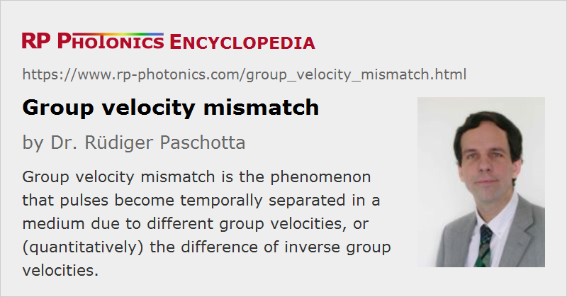

Group Velocity Mismatch
Acronym: GVM
Definition: the phenomenon that pulses become temporally separated in a medium due to different group velocities, or (quantitatively) the difference of inverse group velocities
German: Gruppengeschwindigkeitsunterschied
Categories: nonlinear optics, light pulses
Units: s/m
How to cite the article; suggest additional literature
Author: Dr. Rüdiger Paschotta
When optical pulses with different optical frequencies or different polarization directions propagate in a transparent medium, their group velocities will in general be different. As a result of this group velocity mismatch, two pulses which are initially overlapping in time can after some propagation distance no longer overlap.
This phenomenon, also called temporal walk-off, is particularly relevant in the context of nonlinear frequency conversion with ultrashort pulses. Here, group velocity mismatch limits the effective interaction length.
Quantitatively, the group velocity mismatch is defined as the difference of the inverse group velocities
and has units of seconds per meter.
In a frequency-domain picture, the group velocity mismatch limits the width of the spectral range in which phase matching is achieved, also called the phase-matching bandwidth. This is not an additional effect, however, but only the same phenomenon as seen in the frequency domain.
Typical values for nonlinear crystals and significantly different wavelengths in the visible or near-infrared spectral regions (e.g. 1064 nm and 532 nm) are of the order of 0.1–1 ps/mm. This shows that for a crystal length of e.g. 10 mm the group velocity mismatch can have significant effects for the frequency conversion of 10-ps pulses, and very strong effects for femtosecond pulses. For that reason, it is generally necessary to use shorter crystals for converting shorter pulses, which requires higher optical intensities for maintaining a high conversion efficiency. As the applicable intensities can be limited e.g. by optical damage, group velocity mismatch can effectively limit the achievable conversion efficiency for short pulses.
Group velocity mismatch is also important, e.g., for Raman amplification of ultrashort pulses in optical fibers. For example, picosecond pulses at 1064 nm may be used for amplifying pulses at 1110 nm. In a large mode area silica fiber, the group velocity mismatch is approximately the same as in bulk silica; for the given wavelengths, it amounts to 1.1 ps/m. This means that e.g. 1-ps pulses substantially lose their temporal overlap within 1 m of fiber, so that the effective Raman gain is reduced.
There are also many situations where the group velocity mismatch can be very useful. In some cases, it can increase the efficiency of nonlinear frequency conversion. In optical parametric oscillators, it can sometimes be exploited for wavelength tuning and for significant pulse shortening. In other cases, it is used for purposes of optical signal processing.
Questions and Comments from Users
Here you can submit questions and comments. As far as they get accepted by the author, they will appear above this paragraph together with the author’s answer. The author will decide on acceptance based on certain criteria. Essentially, the issue must be of sufficiently broad interest.
Please do not enter personal data here; we would otherwise delete it soon. (See also our privacy declaration.) If you wish to receive personal feedback or consultancy from the author, please contact him e.g. via e-mail.
By submitting the information, you give your consent to the potential publication of your inputs on our website according to our rules. (If you later retract your consent, we will delete those inputs.) As your inputs are first reviewed by the author, they may be published with some delay.
See also: group velocity dispersion, parametric nonlinearities, phase-matching bandwidth, pulses
and other articles in the categories nonlinear optics, light pulses
|  |
If you like this page, please share the link with your friends and colleagues, e.g. via social media:
These sharing buttons are implemented in a privacy-friendly way!